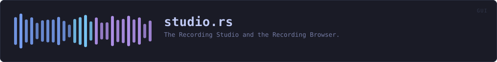

crates/veilvoice-gui/src/studio.rs
veilvoice-gui · 1736 lines · read the source here · or on GitHub
The Recording Studio and the Recording Browser.
Two tabs, one vault
The Studio records; the Browser is what is in the vault afterwards. They are one module because they are one vault, and a vault opened in two places is two chances to get the unlocking wrong.
Marker 130: this is also where veiling as it runs happens
Live scramble was a tab of its own, and it did not need to be. The Studio has always recorded through the same veilvoice_audio::LiveSession that tab ran, with the same engine and the same routing, so the two screens were one act performed in two rooms: pick the devices over there, come here, press record.
Two sessions was the part that was actually wrong. Veiling on one tab and recording on the other opened the same microphone twice, and on the platforms that allow that at all the second stream gets a copy of the input nobody asked for. Studio::start_session is the only starter now, and a test reads this crate's source and fails if a second one appears.
The voice half of the tab is drawn by the window rather than here, because the device lists and the engine settings belong to the window. What lives in this module is the session those controls drive, and everything about the vault.
The voice half works with the vault shut. Veiling a call has never needed a recording vault, and making somebody set one up before they could disguise their voice on a call would be a worse program than the one that had two tabs.
The vault needs both passphrases, and asks for both here
veilvoice_crypto::studio::StudioKey is derived from the app lock and the at-rest passphrase, and from neither alone. That is the whole point of it: a laptop stolen while VeilVoice is unlocked opens nothing, because the at-rest passphrase was never typed.
So this tab asks for both, every time, rather than reaching into whatever the rest of the application happens to be holding. That is a deliberate inconvenience:
- The app-lock secret is only kept for the session when
Sealing::AppLock(crate::security::Sealing::AppLock) is chosen. Reading it when it happens to be there, and prompting when it is not, would make the vault's strength depend on an unrelated setting, and nobody would know which they had. - Prompting for both, always, is the only version of this whose security is the same on every run.
Neither passphrase is stored. Both typing buffers are wiped the moment the key is derived, and the derived key lives in page-locked memory for as long as the vault is open. Locking the window closes the vault.
What is recorded is what comes out, unless it was asked to be otherwise
The Studio records through veilvoice_audio::LiveSession::start_recording, which is the same path the command line uses, so the samples that reach the recorder are the veiled ones. That is the default and it is what Keep::Veiled means.
Marker 131 adds the other two. The microphone can be kept as well, or instead, and the reasoning for allowing it at all is on Keep: refusing would not stop somebody who needs the real recording, it would move them to a phone on the table, which is a plaintext file on a device with none of this. What matters is that it is asked for rather than arrived at.
So it is a choice made before the button, never remembered between runs, reset when the window locks, and stated in the same words the plaintext path uses. The default is the safe one, and every path that has not been asked for the microphone passes None where it would go.
Each recording is assembled inside a veilvoice_crypto::Secret and handed straight to the vault to be sealed. Neither is ever a plain file, not even briefly: an unveiled take is a recording of a real voice, and it is sealed exactly as strongly as a veiled one.
In plain words
Record here, and what you record is kept locked up. Opening the cupboard needs both of your passwords at once, every time, which is what makes it worth having.
What gets recorded is the disguised voice. You can ask for your real one as well, or instead, and the screen tells you what that means before you start: anybody who can open the cupboard can then hear who was talking.
WHAT THIS FILE CONTAINS
1736 lines defining 48 functions (21 public), 6 types and 0 constants. Everything below is read out of the source, so it cannot disagree with the code.
The types it owns.
enum Phaseline 126 · What the Studio is doing.struct Setupline 143 · What a live session was started with.struct Studioline 162 · The Studio and the Browser.enum Keepline 1458 · Which side of the engine a take keeps.enum Renderline 1526 · What a take is to be turned into.enum Actline 1594 · Something a browser row asked for.
What happens when it runs. These are the ways in: public, and nothing else in this file calls them, so they are what an outside caller reaches first.
Studio::is_openline 232 · Whether the vault is open.Studio::is_veilingline 249 · Whether the veiled voice is going out.Studio::levelsline 260 · The smoothed levels, for the monitor strip and for this tab.Studio::tickline 270 · Read the session's counters, once a frame, and move the levels on.Studio::start_veilingline 290 · Start veiling, keeping nothing.
reachesstart_sessionStudio::closeline 324 · Shut the vault and forget the key.
reachesstop_veiling,finish_take,is_recording,store_take,lengthStudio::tabline 906 · The take half of the Recording Studio tab.
reachesis_previewing,keep_form,length,phase,say,shut_panel,start_take,stop_take,take_form,is_recording,unlock,start_sessionStudio::browserline 998 · The Recording Browser tab.
reachesapply,counted,decoy_panel,export,length,made_on,say,shut_panel,size,play,refresh,make_decoysKeep::wants_veiledline 1470 · Whether the veiled voice is kept.Keep::wants_plainline 1478 · Whether the real voice is kept.Keep::labelline 1483 · What this is called where it is chosen.Keep::costline 1497 · What it costs, in the words the plaintext path uses.
WHAT CALLS WHAT
The functions this file defines, and the calls between them. An edge means the callee's name appears, called, inside the caller's body. This is a syntactic reading, not a type-resolved one. 22 of 48 functions are drawn; the diagram is bounded at 22 so it stays readable.
The same graph as Mermaid source
%%{init: {"theme":"base","themeVariables":{"background":"#1a1b26","primaryColor":"#1f2335","primaryTextColor":"#c0caf5","primaryBorderColor":"#7aa2f7","secondaryColor":"#16161e","tertiaryColor":"#16161e","lineColor":"#737aa2","textColor":"#c0caf5","mainBkg":"#1f2335","nodeBorder":"#7aa2f7","clusterBkg":"#16161e","clusterBorder":"#2f3549","fontFamily":"ui-monospace, SFMono-Regular, Consolas, monospace","fontSize":"14px"}}}%%
flowchart TD
n_into_secret["into_secret<br/>line 104"]
n_default_dir["default_dir<br/>line 120"]
n_is_recording["Studio::is_recording<br/>line 244"]
n_is_previewing["Studio::is_previewing<br/>line 255"]
n_phase["Studio::phase<br/>line 277"]
n_start_veiling(["Studio::start_veiling<br/>line 290"])
n_stop_veiling["Studio::stop_veiling<br/>line 307"]
n_close(["Studio::close<br/>line 324"])
n_unlock["Studio::unlock<br/>line 351"]
n_measure["Studio::measure<br/>line 416"]
n_make_decoys["Studio::make_decoys<br/>line 429"]
n_start_take["Studio::start_take<br/>line 473"]
n_start_session["Studio::start_session<br/>line 499"]
n_stop_take["Studio::stop_take<br/>line 557"]
n_finish_take["Studio::finish_take<br/>line 569"]
n_tab(["Studio::tab<br/>line 906"])
n_browser(["Studio::browser<br/>line 998"])
n_counted_decoys["counted_decoys<br/>line 1608"]
n_counted["counted<br/>line 1617"]
n_made_on["made_on<br/>line 1630"]
n_length["length<br/>line 1719"]
n_size["size<br/>line 1725"]
n_browser --> n_counted
n_browser --> n_length
n_browser --> n_made_on
n_browser --> n_size
n_close --> n_stop_veiling
n_make_decoys --> n_counted_decoys
n_make_decoys --> n_measure
n_phase --> n_is_recording
n_start_take --> n_start_session
n_start_veiling --> n_start_session
n_stop_take --> n_finish_take
n_stop_take --> n_start_session
n_stop_veiling --> n_finish_take
n_stop_veiling --> n_is_recording
n_tab --> n_is_previewing
n_tab --> n_length
n_tab --> n_phase
n_tab --> n_start_take
n_tab --> n_stop_take
n_unlock --> n_default_dir
n_unlock --> n_into_secret
n_unlock --> n_measure
click n_into_secret href "https://github.com/tilas01/veilvoice/blob/main/crates/veilvoice-gui/src/studio.rs#L104" "open the source"
click n_default_dir href "https://github.com/tilas01/veilvoice/blob/main/crates/veilvoice-gui/src/studio.rs#L120" "open the source"
click n_is_recording href "https://github.com/tilas01/veilvoice/blob/main/crates/veilvoice-gui/src/studio.rs#L244" "open the source"
click n_is_previewing href "https://github.com/tilas01/veilvoice/blob/main/crates/veilvoice-gui/src/studio.rs#L255" "open the source"
click n_phase href "https://github.com/tilas01/veilvoice/blob/main/crates/veilvoice-gui/src/studio.rs#L277" "open the source"
click n_start_veiling href "https://github.com/tilas01/veilvoice/blob/main/crates/veilvoice-gui/src/studio.rs#L290" "open the source"
click n_stop_veiling href "https://github.com/tilas01/veilvoice/blob/main/crates/veilvoice-gui/src/studio.rs#L307" "open the source"
click n_close href "https://github.com/tilas01/veilvoice/blob/main/crates/veilvoice-gui/src/studio.rs#L324" "open the source"
click n_unlock href "https://github.com/tilas01/veilvoice/blob/main/crates/veilvoice-gui/src/studio.rs#L351" "open the source"
click n_measure href "https://github.com/tilas01/veilvoice/blob/main/crates/veilvoice-gui/src/studio.rs#L416" "open the source"
click n_make_decoys href "https://github.com/tilas01/veilvoice/blob/main/crates/veilvoice-gui/src/studio.rs#L429" "open the source"
click n_start_take href "https://github.com/tilas01/veilvoice/blob/main/crates/veilvoice-gui/src/studio.rs#L473" "open the source"
click n_start_session href "https://github.com/tilas01/veilvoice/blob/main/crates/veilvoice-gui/src/studio.rs#L499" "open the source"
click n_stop_take href "https://github.com/tilas01/veilvoice/blob/main/crates/veilvoice-gui/src/studio.rs#L557" "open the source"
click n_finish_take href "https://github.com/tilas01/veilvoice/blob/main/crates/veilvoice-gui/src/studio.rs#L569" "open the source"
click n_tab href "https://github.com/tilas01/veilvoice/blob/main/crates/veilvoice-gui/src/studio.rs#L906" "open the source"
click n_browser href "https://github.com/tilas01/veilvoice/blob/main/crates/veilvoice-gui/src/studio.rs#L998" "open the source"
click n_counted_decoys href "https://github.com/tilas01/veilvoice/blob/main/crates/veilvoice-gui/src/studio.rs#L1608" "open the source"
click n_counted href "https://github.com/tilas01/veilvoice/blob/main/crates/veilvoice-gui/src/studio.rs#L1617" "open the source"
click n_made_on href "https://github.com/tilas01/veilvoice/blob/main/crates/veilvoice-gui/src/studio.rs#L1630" "open the source"
click n_length href "https://github.com/tilas01/veilvoice/blob/main/crates/veilvoice-gui/src/studio.rs#L1719" "open the source"
click n_size href "https://github.com/tilas01/veilvoice/blob/main/crates/veilvoice-gui/src/studio.rs#L1725" "open the source"
classDef entry fill:#1f2335,stroke:#7aa2f7,color:#c0caf5
class n_start_veiling,n_close,n_tab,n_browser entry
classDef api fill:#1f2335,stroke:#7dcfff,color:#c0caf5
class n_default_dir,n_is_recording,n_is_previewing,n_stop_veiling,n_counted_decoys,n_counted,n_made_on,n_length,n_size api
classDef helper fill:#1f2335,stroke:#bb9af7,color:#c0caf5
class n_into_secret,n_phase,n_unlock,n_measure,n_make_decoys,n_start_take,n_start_session,n_stop_take,n_finish_take helperThis site loads no third-party script, so it cannot run Mermaid; the diagram above is the same nodes and edges drawn by the generator instead. GitHub renders the source below directly.
ITEMS
| Item | Line | Documentation |
|---|---|---|
into_secret fn | 104 | Move a typed passphrase into page-locked storage and wipe the buffer. |
default_dir pub fn | 120 | Where the vaults live: beside the lock file, in this platform's config directory. |
Phase enum | 126 | What the Studio is doing. |
Setup struct | 143 | What a live session was started with. |
Studio pub struct | 162 | The Studio and the Browser. |
Studio::is_open pub fn | 232 | Whether the vault is open. |
Studio::is_recording pub fn | 244 | Whether a take is being kept. |
Studio::is_veiling pub fn | 249 | Whether the veiled voice is going out. |
Studio::is_previewing pub fn | 255 | Whether what is going out is a preview to this machine's own output rather than to the chosen one. |
Studio::levels pub fn | 260 | The smoothed levels, for the monitor strip and for this tab. |
Studio::tick pub fn | 270 | Read the session's counters, once a frame, and move the levels on. |
Studio::phase fn | 277 | What phase the take half of the tab is in. |
Studio::start_veiling pub fn | 290 | Start veiling, keeping nothing. |
Studio::stop_veiling pub fn | 307 | Stop the audio. |
Studio::close pub fn | 324 | Shut the vault and forget the key. |
Studio::unlock fn | 351 | Derive the key from both entries and open the vault. |
Studio::measure fn | 416 | Read the folder the vaults are in: how much room is free, and how many vaults are already there. |
Studio::make_decoys fn | 429 | Make count decoys beside the open vault. |
Studio::start_take fn | 473 | Start recording into the vault's holding area. |
Studio::start_session fn | 499 | Start, or restart, the live session setup describes. |
Studio::stop_take fn | 557 | Stop keeping, seal what was captured, and carry on veiling. |
Studio::finish_take fn | 569 | Stop recording and seal what was captured into the vault. |
Studio::store_take fn | 618 | Seal one recorder's audio into the vault under name. |
Studio::play fn | 687 | Play a take, straight out of the vault and out of locked memory. |
Studio::export fn | 733 | Turn a take into a page, a video, or both, in into. |
Studio::write_page fn | 841 | The player page, its subtitles, and the drawing they sit in. |
Studio::refresh fn | 884 | Re-read the listing from the vault. |
Studio::tab pub fn | 906 | The take half of the Recording Studio tab. |
Studio::browser pub fn | 998 | The Recording Browser tab. |
Studio::decoy_panel fn | 1225 | The decoy panel, under the listing. |
Studio::shut_panel fn | 1244 | The panel shown while the vault is shut, in both tabs. |
Studio::take_form fn | 1304 | The name field for the next take. |
Studio::keep_form fn | 1335 | Which side of the engine to keep, asked before anything starts. |
Studio::say fn | 1365 | Show the last message, if there is one. |
Studio::apply fn | 1376 | Carry out a row action. |
Keep pub enum | 1458 | Which side of the engine a take keeps. |
Keep::wants_veiled pub fn | 1470 | Whether the veiled voice is kept. |
Keep::wants_plain pub fn | 1478 | Whether the real voice is kept. |
Keep::label pub fn | 1483 | What this is called where it is chosen. |
Keep::cost pub fn | 1497 | What it costs, in the words the plaintext path uses. |
Render pub enum | 1526 | What a take is to be turned into. |
Render::wants_page fn | 1536 | |
Render::wants_video fn | 1540 | |
wav_shape fn | 1551 | The sample rate and frame count a canonical WAV header states. |
plan_for fn | 1575 | A one-speaker plan spanning a take. |
Act enum | 1594 | Something a browser row asked for. |
counted_decoys pub fn | 1608 | "One decoy" or "four decoys", so the interface does not say "1 decoys". |
counted pub fn | 1617 | "One recording" or "four recordings", so the interface does not say "1 recordings". |
made_on pub fn | 1630 | A Unix time as a date somebody reads. |
pcm16 fn | 1654 | Sixteen-bit PCM from a WAV, as the waveform drawer wants it. |
safe_stem fn | 1669 | A file name built from what somebody called a recording. |
run_ffmpeg fn | 1692 | Run ffmpeg to put the audio in a video with a black picture. |
length pub fn | 1719 | A length in seconds, as m:ss, for somewhere a person reads. |
size pub fn | 1725 | A size in bytes, rounded to something a person can compare. |